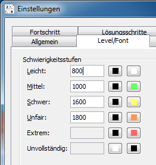

Kapitel 4: Sudokus erzeugen
Inhaltsverzeichnis
- Bewertung und Schwierigkeitsstufen
- Erzeugen von Sudokus im Lern- oder Übungsmodus
- Sudokus mit bestimmten Lösungstechniken erzeugen
- Sudokus im Batchbetrieb erzeugen
- Quellen für Sudokus
Bewertung und Schwierigkeitsstufen
HoDoKus Bewertungssystem ist hauptsächlich als Tool zum Ausfiltern bestimmter
Sudokutypen gedacht. Anders als die Bewertungssysteme vieler anderer
Sudokuprogramme ist es frei konfigurierbar und kann daher auch kein absolutes
Maß für die Schwierigkeit eines Sudokus geben (falls das überhaupt möglich ist).
Für konstante Bewertungen sind viele andere Programme frei verfügbar (z.B.
Sudoku Explainer [toter Link]).
Jede Lösungstechnik hat in HoDoKu zwei Eigenschaften:
- Level
- Score
Der "Level" ordnet die Technik einer der fünf Schwierigkeitsgrade in HoDoKu zu (Leicht, Mittel, Schwer, Unfair, Extrem). Der Schwierigkeitsgrad eines Sudokus kann nicht kleiner sein als der Schwierigkeitsgrad des schwersten in der Lösung enthaltenen Schrittes (er kann allerdings größer sein, siehe unten). Der "Score" aller Schritte in der Lösung wird einfach zusammengezählt und ergibt den Score des gesamten Sudokus.
Um die Eigenschaften einer Technik ändern zu können muss man auf die entsprechende Zeile in der Liste klicken. Der Bereich "Eigenschaften Lösungsschritt" wird dann mit den passenden Daten gefüllt, die nun geändert werden können. Änderungen der Eigenschaften von Lösungstechniken können natürlich die Bewertung aller Sudokus verändern, die diese Techniken enthalten.
Schwierigkeitsgrade haben einen minimalen und einen maximalen Score zugewiesen (der minimale Score ist um eins größer als der maximale Score des nächstniedrigeren Grades). Der Eingabedialog unter "Bearbeiten|Einstellungen|Allgemein" kann zum Setzen der Maximalscores für die einzelnen Grade verwendet werden (Der Maximalscore für "Extrem" ist unendlich, "Unvollständig" ist kein Score zugewiesen). Die Scores der Schwierigkeitsgrade werden beim Bewerten eines Sudokus berücksichtigt. Wie das geschieht, hängt davon ab, ob ein neues Sudoku erzeugt oder ein bestehendes bewertet werden soll:
- Ist der Score des Sudokus größer als der Score des Schwierigkeitsgrades des schwierigsten Lösungsschritts, wird der Schwierigkeitsgrad des Sudokus in beiden Fällen durch den Score des Sudokus bestimmt (Sudokus mit vielen schweren Lösungsschritten sind schwieriger als solche mit wenigen).
- Gehört der Score des Sudokus zu einem Schwierigkeitsgrad, der kleiner ist als der Grad des schwersten Lösungsschritts, wird der Grad des Lösungsschrittes beibehalten. Soll jedoch ein Sudoku mit einem bestimmten Schwierigkeitsgrad erzeugt werden und deutet der Score an, dass das Sudoku zu leicht ist, wird es verworfen.
Die Farben der einzelnen Schwierigkeitsgrade (siehe Screenshot) werden bei der Darstellung der Lösungsschritte in den Bereichen "Zusammenfassung" und "Lösungsweg" verwendet, sie können beliebig angepasst werden.
Erzeugen von Sudokus im Lern- oder Übungsmodus
Die Spielmodi "Lernen" und "Üben" (siehe Spielmodi) sind ideale Instrumente zum Erzeugen von Sudokus, die bestimmte Techniken enthalten. "Modus|Lernen..." oder "Modus|Üben..." im Menü wählen, eine Technik auswählen und ein neues Sudoku erzeugen. In beiden Modi wird das neue Sudoku mindestens eine Instanz einer der gewählten Techniken enthalten. Im Modus "Lernen" wird das Sudoku automatisch so weit gelöst, dass der Schritt direkt ausgeführt werden kann.
Sudokus mit bestimmten Lösungstechniken erzeugen
Mit Hilfe des konfigurierbaren Bewertungssystems kann man leicht Sudokus erzeugen, die bestimmte Lösungstechniken benötigen (diese Funktion ist hauptsächlich für Techniken mit Schwierigkeitsgrad "Schwer" oder höher gedacht). Will man zum Beispiel ein Sudoku erzeugen, das eine AIC enthält, kann man natürlich einfach zufällig Sudokus mit Schwierigkeitsgrad "Unfair" (dem Standard für AICs) erzeugen und in der Zusammenfassung kontrollieren, ob eine AIC vorkommt oder nicht.
Einfacher geht es folgendermaßen:
- AIC wird ein Schwierigkeitsgrad von "Mittel" und ein unrealistisch hoher Score (z.B. 5000) zugewiesen.
- Der Maximalscore von "Leicht" wird auf 5000 gesetzt.
- Der Maximalscore von "Mittel" wird auf 20000 gesetzt, die Scores der höheren Grade werden entsprechend angepasst.
- Nun wird eine neues Sudoku mit Grad "Mittel" erzeugt.
Warum funktioniert das? Es ist einfach unmöglich ein Sudoku zu erzeugen, das mit den "normalen" mittleren Techniken auf einen Score von mehr als 5000 kommt ("Mittel" enthält Singles, Locked Candidates, Paare und Trippel und ergibt normalerweise Scores zwischen ungefähr 600 und 1200). Wenn das Sudoku eine schwere Technik außer AIC (der jetzt ja als "Mittel" gilt) enthält, wird es als zu schwer verworfen. Die einzigen Sudokus die "Mittel" sind und einen Score von mehr als 5000 haben, sind solche, die mindestens eine AIC enthalten.
Es ist natürlich auch möglich, die Eigenschaften von mehr als einer Technik zu verändern. Jedes neu erzeugte Sudoku wird dann mindestens eine dieser Techniken enthalten.
Achtung: Die Strategie des Solvers wird durch die oben beschriebenen Änderungen nicht beeinflusst. Wenn die gesuchte Technik in der Hierarchie weit unten steht, ist die Wahrscheinlichkeit groß, dass ein an und für sich passendes Sudoku eine andere nicht triviale Technik enthält und daher verworfen wird. Es wird daher empfohlen, die gesuchten Techniken weiter nach oben zu verschieben.
Sudokus im Batchbetrieb erzeugen
HoDoKu kann auch im Batchbetrieb ausgeführt werden (siehe Kommandozeilenoptionen). Der Batchbetrieb kann unter anderem dazu verwendet werden, um Sudokus mit bestimmten Lösungstechniken oder Schwierigkeitsstufen zu erzeugen. Die dafür relevanten Optionen sind /s /sc bzw. /s /sl.
/s weist HoDoKu an nach Sudokus zu suchen, /sc bestimmt, nach welchen Techniken gesucht werden soll. Das Argument von /sc ist eine Reihe von Bezeichnern. Jeder Bezeichner enthält den Namen einer Technik (die verwendeten Abkürzungen können mit /lt aufgelistet werden), einen Sudoku-Typ und die gewünschte Menge an Eliminierungen (die letzten beiden Angaben sind optional).
Der Sudoku-Typ gibt an, wie die gesuchte Technik in der Lösung angeordnet sein soll:
- :3 - nur Singles vor und nach der Technik erlaubt
- :2 - SSTS vor und Singles nach der Technik erlaubt
- :1 - SSTS vor und nach der Technik möglich
- :0 - keine Einschränkungen (standard)
SSTS steht für "Simple Sudoku Technique Set" und enthält Singles, Locked Candidates, Hidden/Naked/Locked Subsets, X-Wing, Swordfish, Jellyfish, XY-Wing, Simple Colors und Multi Colors (dieses Set an Techniken wird oft in Foren verwendet um Sudokus bis zu dem Punkt zu lösen, an dem der Spaß beginnt).
Die gewünschte Anzahl an Eliminierungen muss mit einem '+' starten. Das '+' wird gefolgt von einem Operator ('e' für gleich - "equals", 'l' für kleiner als - "less than" oder 'g' für größer als - "greater than").
Obwohl eine beliebige Menge an Technik-Bezeichnern in einem Batchlauf angegeben werden kann, wird jedes erzeugte Sudoku nur eine dieser Techniken enthalten (ausgenommen SSTS-Techniken, die natürlich in den SSTS-Teilen beliebig oft vorkommen können).
Die Kommandozeile für einen Batchlauf, der Sudokus, die Swordfishes enthalten, erzeugen soll, wäre:
java -Xmx512m -jar hodoku.jar /s /sc bf3
oder
hodoku.exe /s /sc bf3
Die Kommandozeile für einen Batchlauf, der nur schwere Sudokus erzeugen soll, wäre:
java -Xmx512m -jar hodoku.jar /s /sl 2
oder
hodoku.exe /s /sl 2
/o kann benutzt werden um eine Ausgabedatei anzugeben, /f um die Optionen aus einer Datei zu lesen und /c um eine beliebige Konfigurationsdatei zu verwenden (siehe Konfigurationen und Sudokus speichern/laden). Mehr Optionen sind in der Referenz beschrieben.
Quellen für Sudokus
Wenn man sich das Erzeugen von Sudokus ersparen will, gibt es jede Menge guter Sudoku-Sammlungen im Internet (die meisten spezialisieren sich allerdings auf schwere Sudokus). Einige Beispiele:
http://mapleta.maths.uwa.edu.au/~gordon/sudokumin.php[toter Link]- Gordon Royle's Sudokus mit nur 17 anfänglich gesetzten Zellen (siehe auch Links). Die meisten Sudokus sind nicht sehr schwer.
http://www.setbb.com/sudoku/viewtopic.php?t=1432&mforum=sudoku[toter Link]- Wapati's schwere Sudokus (können ohne Chains gelöst werden).
- http://forum.enjoysudoku.com/viewtopic.php?t=6291
- Patterns Game Results: Enthält sehr viele Sudokus mit ganz unterschiedlichen Schwierigkeitstufen, die jeweils alle gleich aussehen. Die letzte Zahl auf jeder Zeile ist die Bewertung von Sudoku Explainer.
http://www.setbb.com/sudoku/viewtopic.php?t=1480&mforum=sudoku[toter Link]- Tarek's "Pearly6000" (sehr schwer).
http://www.sudocue.net/top10000.sdm[toter Link]- Eine Untermenge der top50000 (enthält nur die schwersten Sudokus aus der größeren Liste).
- http://magictour.free.fr/top1465
- Die top1465, eine andere sehr gute Sammlung mit schweren Sudokus.
Copyright © 2008-12 von Bernhard Hobiger
Zuletzt geändert am 5. Mai 2025 von shorty#3746
(basierend auf dem 1to9only Github-Repo)
Alles Material auf dieser Site unterliegt der GNU FDLv1.3.